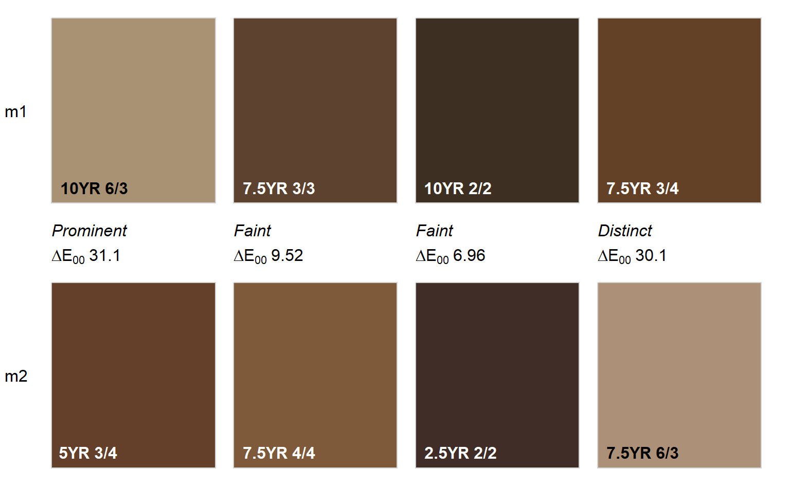

colorContrastPlot.RdA simple display of two sets of colors, NCSS color contrast class and CIE delta-E00.
colorContrastPlot(m1, m2, col.cex = 1, col.font = 2, d.cex = 1, cc.font = 3, dE00.font = 1, labels = c("m1", "m2"), label.cex = 1, label.font = 1, printMetrics = TRUE, ...)
| m1 | first set of Munsell colors for comparison (e.g. '5YR 3/2') |
|---|---|
| m2 | second set of Munsell colors for comparison |
| col.cex | scaling factor for color labels |
| col.font | font for color labels |
| d.cex | contrast for contrast metric labels |
| cc.font | font for contrast class |
| dE00.font | font for delta-E00 |
| labels | labels for compared colors, vector length 2 |
| label.cex | scaling factor for labels |
| label.font | font for labels |
| printMetrics | logical, print metrics between color swatches |
| … | further arguments to |
This function requires the farver package for calculation of CIE delta-E00
# two sets of colors to compare m1 <- c('10YR 6/3', '7.5YR 3/3', '10YR 2/2', '7.5YR 3/4') m2 <- c('5YR 3/4', '7.5YR 4/4', '2.5YR 2/2', '7.5YR 6/3') # contrast metrics colorContrast(m1, m2)#> m1 m2 dH dV dC dE00 cc #> 1 10YR 6/3 5YR 3/4 2 3 1 31.112562 Prominent #> 2 7.5YR 3/3 7.5YR 4/4 0 1 1 9.522489 Faint #> 3 10YR 2/2 2.5YR 2/2 3 0 0 6.959582 Faint #> 4 7.5YR 3/4 7.5YR 6/3 0 3 1 30.054654 Distinct# graphical display colorContrastPlot(m1, m2)